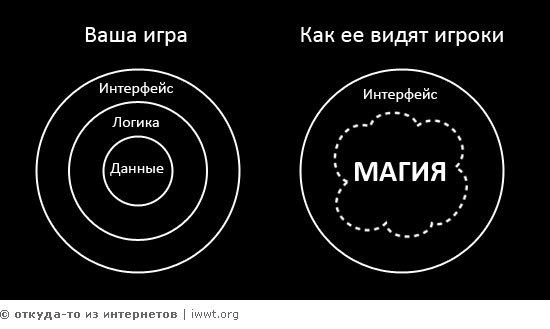

При разработке пользовательских интерфейсов словом юзабилити обозначают общую концепцию их удобства при использовании программного обеспечения, логичность и простоту в расположении элементов управления. Однако при этом нередко происходит подмена понятий — утилитарных эстетическими. Тогда чётко не определённая в целях и не обоснованная в деталях полезность конкретного решения для пользователя, считается сама собой разумеющейся, вытекающей из оригинальности внешнего вида.
Термин «юзабилити» можно рассматривать как синоним слова «эргономичность»[ с той разницей, что последняя определяет минимальность конкретных физических усилий при пользовании вещью, а первая — конечную суммарную степень удобства, меру интеллектуального усилия необходимого для получения полезных качеств этой вещи и скорость достижения положительного результата при управлении ею. Поэтому применительно к таким продуктам, как бытовая электроника или средства связи, чаще используют понятие «эргономичность» относительно формы, компоновки узлов и веса, к примеру, а «юзабилити» — применительно к понятности элементов управления и режимов работы, к количеству и необходимости функций.
В более широком значении термин «юзабельность» употребляется как удобство пользования (например, для механических приспособлений и инструментов (таких как дверная ручка или молоток) эргономичность формы будет повышать юзабельность вещи (то есть «удобство применения», «дружественность и простоту при пользовании», «практичность» и вообще «применимость»).
Юзабилити имеет серьёзное значение для показателей конверсии в электронной коммерции. Однако юзабилити означает не только улучшенное визуальное руководство или улучшенную иерархию сайта. Это также означает и больший контакт с потенциальным покупателем посредством профессионально сделанного серьёзного дизайна, преподнесения верной информации тогда, когда она нужна